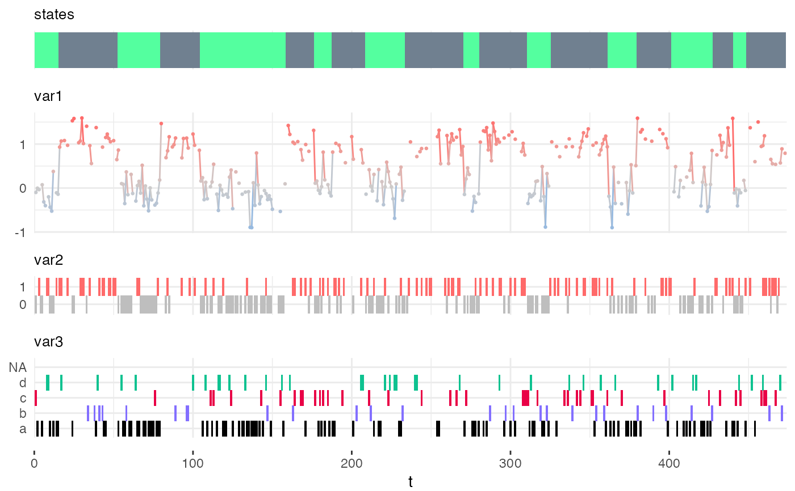
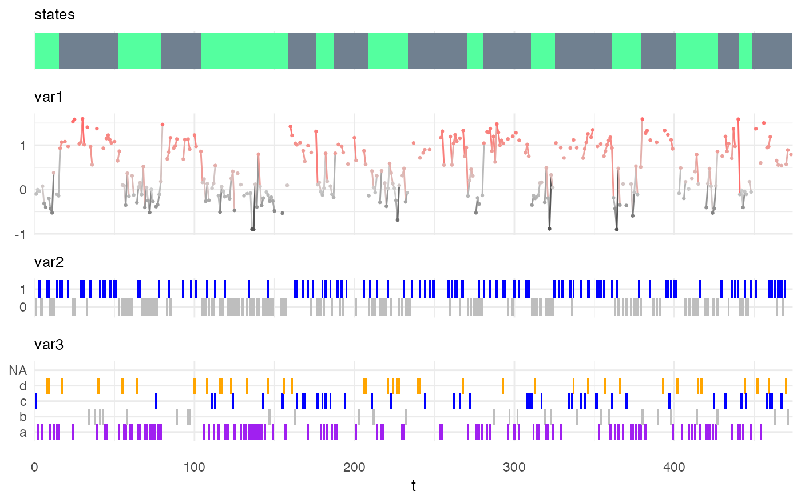

available_emission_viz_options.RdSpecifying viz options is mostly useful for the visualization of observation sequences with the function plot_hsmm_seq().
available_emission_viz_options()
A data.frame with the following columns:
distribution, viz_options and option_description.
my_model_no_viz_options = specify_hsmm( J = 2, init = c(1,0), transition = matrix(c(0,1,1,0),2,2), sojourn = list(type = "gamma", shape = c(2,10), scale = c(10,3)), marg_em_probs = list( var1 = list( type = "norm", params = list( mean = c(0,1), sd = c(0.3,0.2) ) ), var2 = list( type = "binom", params = list( size = rep(1,2), prob = c(0.2,0.8) ) ), var3 = list( type = "non-par", params = list( values = c("a","b","c","d"), probs = matrix(c(0.7,0.1,0.1,0.1, 1/4,1/4,1/4,1/4), 4,2) ), viz_options = list(colors = c("black","slateblue1","#E90046","#0EC290")) ) ), censoring_probs = list(p = c(0.1,0.2), q = matrix(c(0.1,0.2,0.3,0.4,0.5,0.6), nrow = 3, ncol = 2)), state_names = c("A","B"), state_colors = c("seagreen1","slategray") ) class(my_model_no_viz_options)#> [1] "hsmm"Xsim = simulate_hsmm(model = my_model_no_viz_options, n_state_transitions = 20) plot_hsmm_seq(model = my_model_no_viz_options, X = Xsim)my_model = my_model_no_viz_options my_model$marg_em_probs$var1$viz_options$color_low = "black" my_model$marg_em_probs$var2$viz_options$color_max = "blue" my_model$marg_em_probs$var3$viz_options$colors = c("purple","gray","blue","orange") plot_hsmm_seq(model = my_model, X = Xsim)